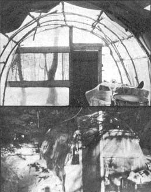

With most of my money converted into six isolated acres of a New Hampshire homesteading community, with only $200 to spend on a permanent all-weather house (see MOTHER NO. 14 for details), with a whole summer's worth of hours already promised to self-building that house and readying the soil for food production . . . I faced last spring still needing a special kind of summer shelter that I'd apparently have to produce out of little more than thin air. Because I knew I had a lot of physical labor ahead of me, I wasn't after living hassles and I really wanted a bug-free, rain-resistant dwelling that I could walk around in, sleep in, eat in, write in and meet with at least five friends in . . . in comfort. A tent just wouldn't do. What I needed was an inexpensive (very), summer home which would give me those comforts AND which could be put together by a handful of people in less than a handful of days.
Impossible? Not really. What I came up with was just that and more . . . my seasonal home fit all my requirements to a "T" and added a rich vein of silver to my summer with the unique quality of its interior.
I found the prototype for my temporary house in Alicia Bay Laurel's book, LIVING ON THE EARTH. The plastic-covered, Quonset hut-like structure pictured there, I thought, would surely be inexpensive and easy to throw up in a couple of days. I didn't look forward to the offensive sight of plastic in the woods, of course, but I thought that the shape might make some aesthetic compensations and-with no sharp corners or jarring lines-the tunnel could conceivably be tucked deep under the hemlocks and hardly show. There was still the unappealing prospect (I didn't know then about the silver bonus) of having to move and breathe surrounded by plastic film that fuzzed the trees and sky to dull shadows but the material was cheap and the design was right . . . so it had to be.
Off I went to town and friends for the needed supplies. I bought a 10' x 100' roll of building plastic and some three or four-penny nails for a total of $11. That was the extent of my purchases . . . everything else I needed was donated.
My friend Van gave me some scraps of vinyl-backed felt (an old inner tube would have done) to be cut into one-inch squares and put between the plastic and the nails to avoid any tearing. Another friend donated a piece of screen, an old farmer gave me all the baling twine I needed and a full-length screen door and a four-and-a-half-foot cabinet door came from the basement collections of generous friends. With these supplies and a few hammers, a crowbar, a rake, brush cutters, a small saw and an axe, three friends and I hiked down to my land and got ready to begin construction.
For the site, I chose a flat spot about 100 feet away from the beaver pond. It was covered by a roof of hemlock branches which would protect my home from wind and rain and the native inhabitants-beaver, deer, Great Blue Heron and even me-from the obtrusive appearance of the plastic. The trees were spaced such that I could just squeeze a 10' x 21' tunnel between their trunks . . . a perfect place.
We cut the network of vines and roots from the grove, raked and crowbarred out prominent rocks and generally made the surface as flat and clear as possible. I then went off to cut down 20 saplings-with base diameters of about three inches-to serve as the hut's frame. (Although my conscience nagged me, the recently logged-off area offered young trees to choose from and my thinning job was probably ultimately beneficial.) I next cut off the top of the saplings, leaving a ten-foot pole which I stripped of any remaining branches. While I was trimming and cutting, Van used the crowbar to make a set of footdeep holes, spaced about two feet apart along one of the long edges of the grove. We then dug a corresponding row of holes 10 feet away and parallel to the first and shoved a sapling deep into each of the 20 narrow excavations. When the fit was not quite tight enough and a sapling could still flex in its hole, we wedged the pole in with a five-inch-long leftover chunk hammered in alongside the length of the sapling.
Once the frame members were stabilized, we grabbed one of the end poles at about shoulder height, drew its top down to the middle of the 10-foot-wide space, did likewise with the sapling across from the first and overlapped the ends so that the maximum height of the curve was about six feet, ten inches. We then lashed the two together by tightly drawing the baling twine round and round the pair of branches in about three different places.
We repeated the process with all ten sets of saplings, forming a tunnel-shaped framework that we were careful to keep at an even height (the breadth of each arched pair varied according to the flex in the trees). To even out and strengthen the skeleton a little, we cut seven more saplings-all close to 20 feet tall-and ran them the length of the frame, spaced evenly across the top from about three feet off the ground. (Although we placed these supports on the outside of the frame, I later learned to weave the crosspieces in and out of the supporting poles.) One frame . . . complete by sunset.
The next day we (four friends and I) came back to drape the structure with plastic by laying the roll of film down beside the saplings on the outside of the frame and pulling the end of the material up over the top of the structure and down to ground on the other side . . . where we cut it off so that there was about a foot and a half left over on either side. We stretched and smoothed the ten-foot width (leaving about six inches extending over the end arch) and then the four of us took hammers or rocks and some vinyl squares and started nailing the plastic down at each juncture of crosspiece and arch (I found later that a staple gun works faster and makes it easier to remove the plastic and use it for something else later).
After the first width of plastic was secured we cut, spread and nailed down the second 10-foot sheet-with a generous overlap of the first-and my home was nearly "roofed". We needed only a four-foot end piece to cover the remaining space and provide the six-inch overhang . . . this we twisted around the end saplings and secured with more vinyl and nails. Now we had a beautiful open-ended tunnel of plastic, its top faintly dappled with sunbeams filtered through the hemlocks. We were proud.
End to end ventilation (cross ventilation) is important in a plastic dwelling-since the material absorbs much heat-and our next step was to make door and window frames for the ends of the tunnel.
On the ground across the front, we put a ten-foot sapling and lashed it to the bottoms of the end poles. Next we ran two poles from the ground to the top of the first arch and spaced them to accommodate the width of the cabinet door (the fit would be tight so that the door would stay closed). After lashing these two uprights securely to the ground-level and arched saplings, we cut a sapling crosspiece, placed it four and a half feet (the height of the door) up from the bottom pole and lashed the higher cross-pole to each end sapling. We fit the door into thisframe, nailed its hinges to the left-hand support-using the same three and four-penny nails-and we had ourselves a real opening and closing door. (Editor's note: the door and window frames in the accompanying pictures were made with squared logs rather than saplings.)
Making the window was easy once we had the door frame completed. The top sapling of the door frame became the upper edge of the window frame as well and, about two feet below it, we ran a second horizontal sapling from the right-hand edge of the door frame to the right sapling of the arch and lashed the two together with twine. Window frame done . . . ready for screening.
We cut the donated screening to overlap the window frame by about three inches all around . . . the edges got rolled over the sapling frame and nailed at four-inch intervals on the inside (the closer the nails, the less the chance of invading insects).
We then cut a piece of plastic roughly the shape of a slice of pie to fit over the whole right-hand section-from door to arch-of the house's front. After lapping and rolling the edges over the top and edge of the loop and around the sapling crosspiece at the bottom, I then nailed the film all around the outside of the window frame (three-inch intervals this time, again for bug resistance). I cut the plastic along the two sides and bottom of the inner edge of the frame to make a plastic flap that could roll up or down over the screen depending on the weather.
We finished the front of the but by nailing another wedge-shaped piece of plastic over the loop, bottom and door frame of its left-hand section.
The back door was a breeze to put in after the front since it wasn't to be used as access but just as a sort of screen for ventilation . . . we followed the front door installation procedure without worrying about making the screen open and close. Once again wrapping the edges tightly over the arching saplings, we nailed two pie slices of plastic on either side of the door.
We finished off the but by digging a trench along both long sides and burying the "excess" plastic we had left along the shelter's edges. This prevented rainwater from collecting at the tunnel's edges and soaking the ground inside. We then cut a piece of plastic to fit the floor, laid it down and nailed it to the inner bottom of the frame members to create a vapor barrier.
Two days' work and my little tunnel home was finished. . . almost. We still had to bring in the hut's furniture: two wooden straight-backed chairs, a 3' x 4' table, a luxurious easy chair, a mattress and a set of bedsprings, bedding, tablecloth, a thick carpet, a Coleman stove, a few "kitchen" supplies and two kerosene lamps.
The road ends before it reaches my property, so hauling furniture cost us a few hours of hard labor on the third day . . . but it was worth it. The rug just fit, the easy chair sat in a corner right by the screened window so that I could look out at the Great Blue Heron over the swamp, the table and chairs lined one side and-in the back, running crosswise against the screen door-the bed and springs provided comfortable sleeping accommodations. My little "cottage" looked like a warm hobbit but overhung by hemlocks . . . thoroughly inviting.
I stayed alone on the land-without seeing anyone-for three weeks and it was during this time that I came to realize the incredible uniqueness of my dwelling. The plastic seemed to filter out the yellow in the sun's rays, and let in only a pure white light that turned the interior to solid silver. My scrounged and hastily built $11 but was like a huge and lovely chandelier, a giant bubble that changed the quality of my days by giving my living space a rare beauty that I had to live up to. I felt compelled to match the crystal clarity of the but with an alertness of mind and an attention to form in all my work on the land . . . the beauty of the but pervaded everything I did, turning work to art.
In time, my friends returned to create their own summer spots of silver in the woods. We built three more huts, a sunwarmed greenhouse and even a guest house . . . all variations of our first structure. (The guest house differed most since we made it longer and narrower than its predecessors and added a partial dome at the back, formed by three saplings placed about three feet apart in a semicircle, their tops drawn together and lashed to the top middle of the end arch in the tunnel).
Our plastic buildings were all fairly bug and weatherproof, but high winds and heavy rains made us very glad that we'd taken the precaution to place most of them under the protection of overhanging trees . . . the out-in-the-open greenhouse needed constant repair.
Unfortunately, only two huts survived the winter snow loads. Now that we have a "real" house, we use one of the two for storage. We could have extended the life of our summer structures by taking the plastic off in the fall and putting on a fresh covering in the spring . . . and we did reinforce the storage shed against winter snows by placing beams in the center of the but from the peak of each arch to the floor.
The big house is built now and I no longer "need" my hut . . . but as spring came this year, I felt glimmerings again of the silver summer I could have if I spread plastic over one of the old frames and took to the hemlocks again. Hesitantly, I mentioned my thoughts to several of the other former but dwellers . . . and wasn't surprised to learn that they'd already decided to trade the comfort of their homes for a summer in an $11 hut. That silver light, I guess, has gone to all our heads.
|
 |
|
|